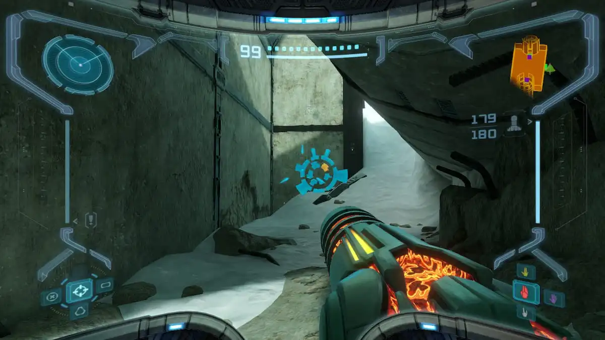
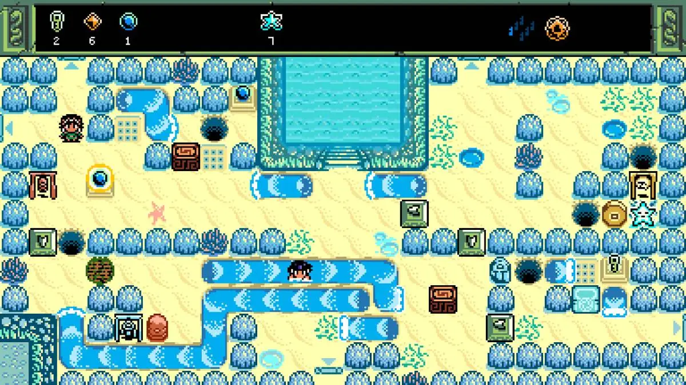
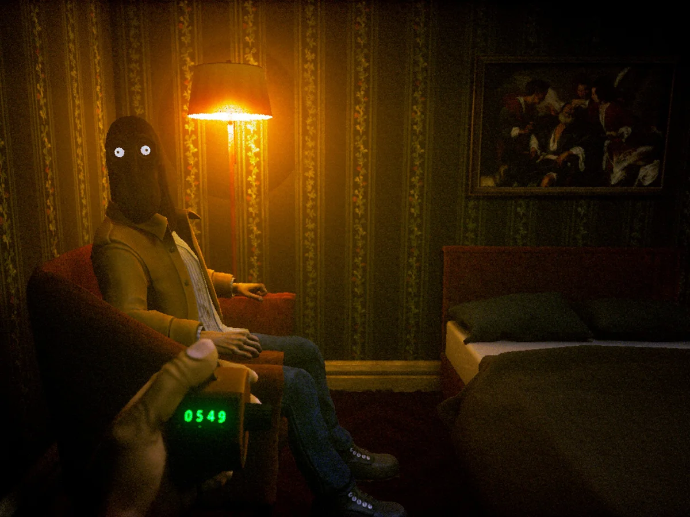

Games Fraser Played in 2025
Here we go again! 2025 is still happening so this list is still growing. But this is where I am dumping now the games I played so far this year. At the end of the year I'll order them but for now you can enjoy these little game reviews.
Metroid Prime Remastered (Switch)
Vibes: 10/10
Gameplay: 10/10
Decided to start off my year by replaying this absolute banger of a game. I really recommend this to anyone who hasn't played it. It's a timeless and wonderful game which really is more puzzle than action. Samus is a badass, and the vibes of the game are immaculate. She is totally alone on an alien planet and has to deal with a bunch of bullshit and take down this insane monster by herself, and she does it because she's fucking Samus. I really enjoyed reliving the soundtrack, and this time I particularly vibed with the music from Phendrana Drifts Depths .
This remake on the Switch is so fucking good. I'm not normally paying attention to performance and technical stuff, but I read that this game is kind of a miracle - it looks insanely good and also runs super smoothly at 60fps. The boys and girls at Retro Studios much be super experts at making video games, and the new Metroid Prime game is definitely gonna be so fucking good. I just need to know what they were working after they finished Donkey Kong Country. It's driving me crazy.
I am still pissed about this one chozo artifact though. Had to look up the thing with the tower, super lame!
Isles of Sea and Sky (PC)
Vibes: 9/10
Gameplay: 9/10
After I fell in love with Void Stranger last year and then found myself drawn to Block Koala no less when playing UFO 50, it finally hit me that I fucking love block puzzle games! Like puzzle games in general are totally my shit and specifically these sukopan-style games slap so hard.
This one is special because there is a whole world full of puzzles that you can walk around freely. If a puzzle is too difficult, you can just find something else to do and come back to it. This is great most of the time, but this game does have power ups which make certain puzzles possible, and sometimes when I'm tackling a tough puzzle I doubt myself whether I'm just too dumb to solve it, or if I actually need to collect a power-up from somewhere else first. It's led to a couple of moments of frustration, but it's totally forgivable given how good the puzzles are.
Soundtrack is fab as well!
Case of the Golden Idol (Switch)
Vibes: 9/10
Gameplay: 9/10
This is a detective game! You have a short moment in time and you have to collect all the evidence and then fill in the gaps in the story, Obra Dinn style. It's so good!
There is a bunch of these scenes and you get to see this wild overriding story over the course of many years. Great vibes and really fun to finally get the answer.

CLICKOLDING (PC)
Vibes: 9/10
Gameplay: 3/10
This game is terrifying in a way I have never experienced before. This game is a sex thing. I straight up don't recommend it, unless you're interested in real weird shit. I really liked it though I won't lie. I definitely can't stop thinking about it.
